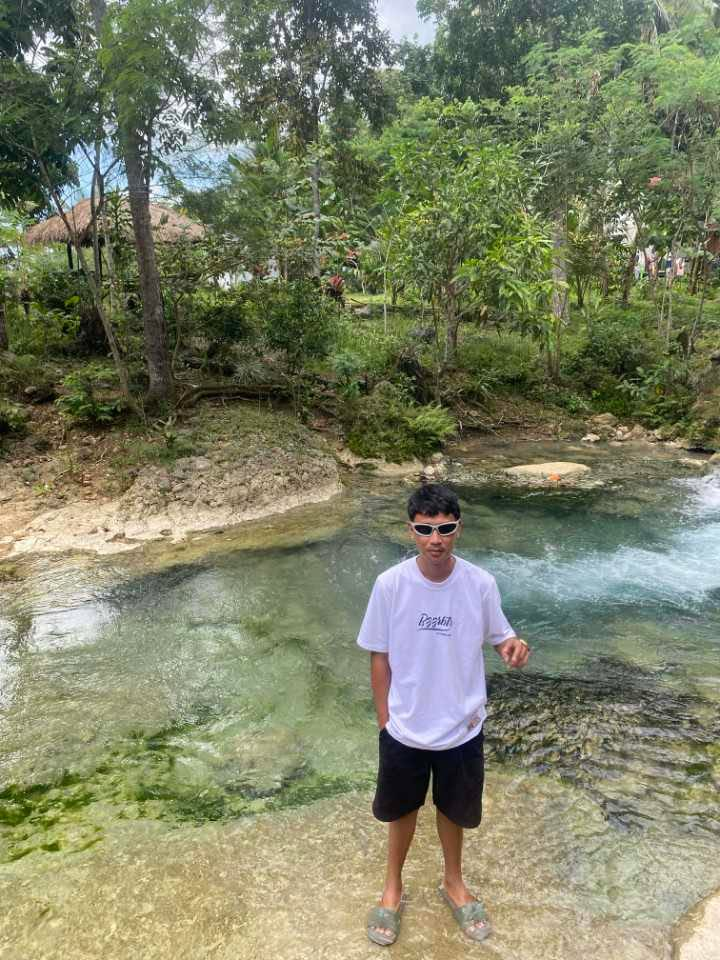
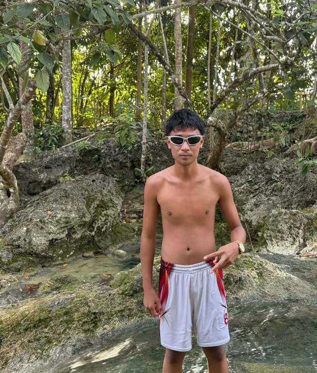

Kabankalan Catholic College
Currently pursuing a degree in Information Technology, learning programming, computer systems, networking, and web development.
I am a Bachelor of Science in Information Technology (BSIT) student who is passionate about technology, programming, web development, and creating innovative digital solutions.


Hello! My name is John Paul Oghayon, and I am a Bachelor of Science in Information Technology (BSIT) student at Kabankalan Catholic College.
I am interested in computers, technology, programming, and web development. I enjoy learning new skills and discovering how technology can help solve everyday problems.
My goal is to become a successful IT professional and develop useful applications and websites that can make people's lives easier.
Currently pursuing a degree in Information Technology, learning programming, computer systems, networking, and web development.
Completed my high school education and developed important academic, communication, and teamwork skills.
These are examples of the projects and activities related to my learning journey as an IT student.
A personal website that introduces my background, educational achievements, skills, and interests.
Learn MoreA student application concept designed to organize student information and provide useful academic features.
Learn MoreA website design project focused on creating responsive, user-friendly, and visually appealing web pages.
Learn MoreSkills and knowledge that I am developing throughout my Information Technology studies.
Sports and physical activities help me develop discipline, teamwork, confidence, and determination.
Volleyball helps develop teamwork, communication, coordination, and discipline.
Pickleball is an enjoyable sport that improves focus, coordination, and sportsmanship.
Thank you for visiting my personal portfolio! Feel free to contact me for questions, collaborations, or opportunities to learn and grow together.
Send Me an Email